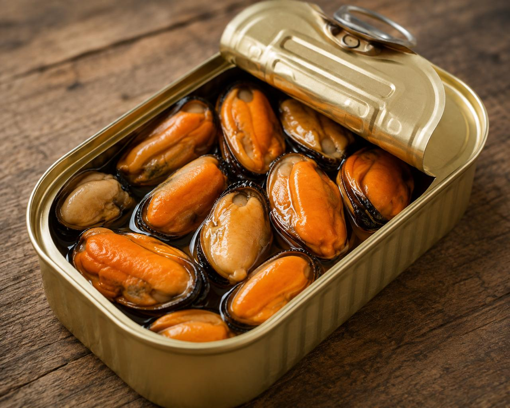
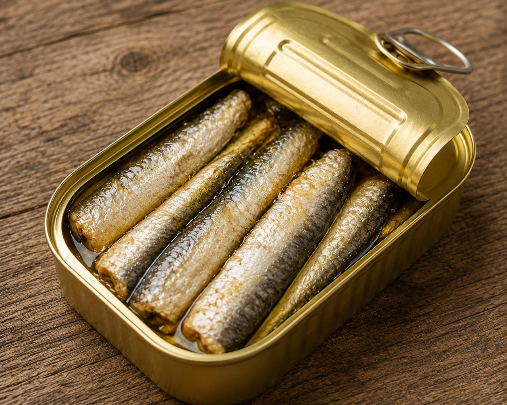
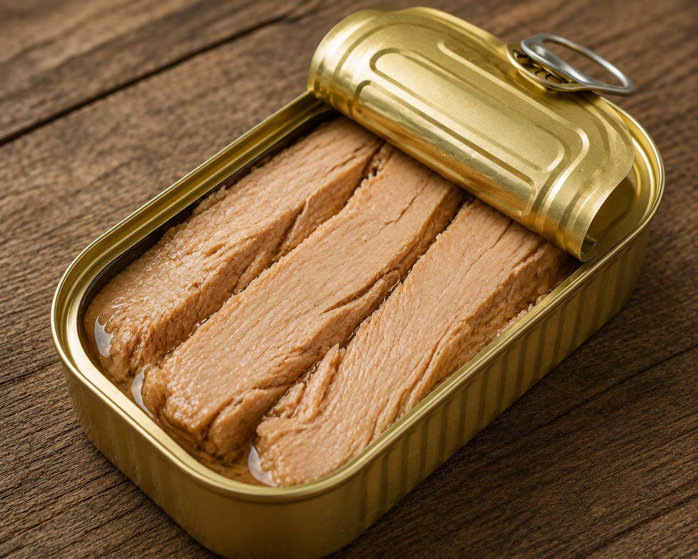

De Vigo para todo el mundo
Trabajamos con conserveras gallegas que mantienen el enlatado manual y el respeto por la materia prima.
Cada lote es seleccionado para garantizar textura, sabor y autenticidad atlántica.
Gourmet Atlántico
Desde Vigo, Galicia
En La Lata en Casa seleccionamos las mejores conservas de las rías gallegas: sardinas, bonito del norte, mejillones y pulpo elaborados con métodos tradicionales.
Descubrir la tienda
Trabajamos con conserveras gallegas que mantienen el enlatado manual y el respeto por la materia prima.
Cada lote es seleccionado para garantizar textura, sabor y autenticidad atlántica.
Nuestra selección

En aceite de oliva virgen extra.
Seleccionados pieza a pieza.

Aceite de oliva de primera presión.

Ideal para regalo o degustación.
Descubre nuestros packs gourmet y recibe en casa una selección de conservas gallegas premium.
Ir a la tienda